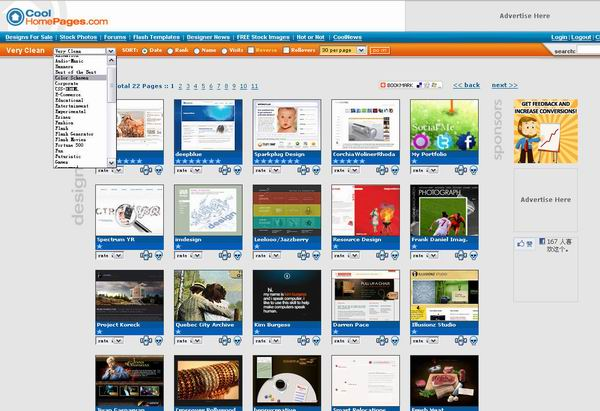

web设计趋势与潮流
http://www.alibuybuy.com/22600.html
原载于 《程序员》杂志2010年第7期。 作者：西乔
19年前，世界上第一个网页诞生，它没有设计可言，由文本和url组成，样式只有最基本的<h1><p>。而如今，Web设计已经成长为独立而庞大的设计门类，一个网页的创造需要多个工种、多种技术的参与，其流程的复杂和挑战性已经超过任何传统设计类别。
这19年间，网站的拥有者越来越清楚自己的目标，而设计师们也越来越理性和专注，人们在不停寻求商业诉求、用户、审美和技术上的平衡点。每一年过去，都有无数过时的风格、特征元素以及实现技术被抛于身后。
设计风潮体现着一个时期内人们对特定的风格、趣味、审美、技术乃至理念等各种模型或特征的追随。新技术的发展、媒介载体的占有量的变化、新网站类型的诞生、全球的设计思潮的影响、行业领军者的转变、明星设计师个体的亮点，这些因素都在推动潮流的变化。 你可以回想一下那些曾经风靡一时的模式：复古的像素样式；Google的朴素之风；韩式清新插画风；Flashsite的兴起带来的不规则布局和动画的滥用；Apple引发的对质感的追求；用户和情境意识的觉醒；对细节的关注——圆角和阴影的广泛运用； Web2.0设计风潮中典型的配色和特征元素；空间与层次感的魔术……
09年流行的半透明风格：
http://hiphotos.baidu.com/hxzon/pic/item/60ce054f3d5a1d76aec3abf2.jpg
空间和层次感的魔术：
http://hiphotos.baidu.com/hxzon/pic/item/fdd0dcb41447c4338ad4b2f2.jpg
潮流的涌现，是社会一致化与个体差异化的碰撞，每一次碰撞都推动着这个行业的进步。
让我们来看看这些发生中的变化：
简洁，精简，极简
http://hiphotos.baidu.com/hxzon/pic/item/407eb51ce5ab4bcb86d6b6f2.jpg
极简主义（Minimalism ）在这一年大热。原因有4点：
1， 手持便携设备的占有量逐步上升，人们的访问方式发生了改变，小尺寸屏幕所需的精简之道反过来影响了整体的设计趋势。
2， Apple简洁、专注、充满诱惑力设计哲学重领潮流，效仿者众多。
3， 来自全球设计思潮的影响：极简、禅意、人文、空间感的“日式风格”这两年在出版界、时装设计、包装设计、工业设计界都颇受追捧。
4， 网站的专业性和针对性在进一步加强，人们选择一个网站一次把一件事做好、做到极致，而非盲目扩张。这也使“精简”拥有更大的实现空间。
极简主义体现设计师对意图、受众、情境的强大控制力。不是简单的做减法就可以了，如果不能很好地把握取舍的宗旨与理由，一个为了极简效果而精简的页面可能看起来庸俗不堪，是为“做作”的留白 。
操刀这一风格需要对作品有充分的自信和理解力，更重视细节和布局，把握恰当的对比、强调。
来自版式和留白的均衡美感 http://hiphotos.baidu.com/hxzon/pic/item/4c7c217ff885ed4829388af2.jpg
极简主义风格非常适用于以图片为表现主体的网站
http://hiphotos.baidu.com/hxzon/pic/item/558501084092f570e82488f2.jpg
极简主义的风潮中，还涌现了许多单页网站。所有内容都放在一个页面上呈现，通过分屏来巧妙地布置格局，不再有跳转和复杂的站点结构，一目了然。
更有人情味与趣味的设计
运营上的专注使得设计师们可以在设计中投入更多的感情，更有针对性地取悦受众。从保守、冷漠、功利的陈旧风貌中，涌现出更多富有生命力和趣味的产品。
Twitter取得了巨大成功，可爱的小鸟形象深入人心。以动物为主题的logo和网站吉祥物也随之风行起来。
http://hiphotos.baidu.com/hxzon/pic/item/e3921930838e52d9a8018ef2.jpg
http://hiphotos.baidu.com/hxzon/pic/item/228ebe99c5aba6486f068cf2.jpg
这一变化出现的原因：
1是具有针对性的中小型服务和应用类网站大批涌现。
2是来自示范者的力量。
3是多元化的必然趋向。
4是在功能性、规范性和用户体验之外，设计师开始寻找那些从未出现过的、能更深层次打动用户的东西——“一种在感情上赢得人们喜爱的东西”。
http://hiphotos.baidu.com/hxzon/pic/item/62ab4a0800acf7d50b7b82f2.jpg
亲和、活泼、富有感染力、配色清新、使用自然元素作为装饰物。
http://hiphotos.baidu.com/hxzon/pic/item/a5ac1b957ad1e8487af480f2.jpg
http://hiphotos.baidu.com/hxzon/pic/item/c1d10408095ee09163d986f2.jpg
http://hiphotos.baidu.com/hxzon/pic/item/b05e0cd116731893562c84f2.jpg
曾经很不常见的高饱和度的配色，这种充满动感和生命力高调设计让人充满惊喜。
http://hiphotos.baidu.com/hxzon/pic/item/a973f4d32186fb9fa8ec9af2.jpg
精致有趣的细节
http://hiphotos.baidu.com/hxzon/pic/item/9c8617dfd1466053622798f2.jpg
原文链接: http://blog.xiqiao.info/2010/07/19/719
对传统设计的借鉴
Web设计这个年轻的分支在自我生长的同时也在不停向传统设计汲取营养。在布局与版式方面，设计师们一直在探寻更好的表现手法，所以尝试从传统的设计媒介中寻求灵感，杂志版式布局（ Magazine-style Layouts）的从09年就开始大热，不光大型新闻网纷纷求变，杂志版式布局的Wordpress Themes 也炙手可热。 这一变化对传统设计不仅仅是形式上的追随，更重要的是尝试去借鉴与融合的态度。
Times 和 Financial Times 都是国外老牌媒体，他们的网站布局结合传统纸媒版式有许多新潮的亮点，比如 竖式的流体布局，图文混排，头条强调，由标题字号变化带来的层级差别。
http://hiphotos.baidu.com/hxzon/pic/item/62468c13198d8890f6039ef2.jpg
http://hiphotos.baidu.com/hxzon/pic/item/a88d64d08ba97bcfa1ec9cf2.jpg
而国内的此类网站绝大多数采用的还是非常传统的横向区块布局，信息密度高，版式缺乏节奏和韵律。
http://hiphotos.baidu.com/hxzon/pic/item/64697f3143ff5959eac4aff2.jpg
http://hiphotos.baidu.com/hxzon/pic/item/3ca9978fde46e2ba503d92f2.jpg
由比较可见，国外的大容量信息网站的趋势是 降低首页的信息密度，把内容分摊到二级频道；版式上更具引导性、更适于阅读，浏览方式像读报一样更流畅随意。
由于广告盈利价值的差别，国内这类网站还是使用信息密度极高的索引模式，所以看起来更像说一份导流量的“黄页”而非可随心阅读的媒体。在信息呈现密度与模式无法改变的情况下，照搬国外的版式布局是非常危险的。
除了在样式上的借鉴，传统版式设计上的许多经典的实现手法也移植了过来，最著名的就是黄金比例和栅格系统（Grid System)。栅格系统的历史有300多年，运用严谨的几何网格来指导和规范元件的分布排列。将传统栅格移植为适合网页设计的系统，不光是创造了一种工具，也产生了一种普遍的审美规范与倾向。无论你是选择遵循规范还是打破规范，都是对它的推动。
960px宽的网页栅格系统 960 Grid System：
http://hiphotos.baidu.com/hxzon/pic/item/6b460efad197ccd758ee90f2.jpg
http://hiphotos.baidu.com/hxzon/pic/item/9a972097db44d72d54fb96f2.jpg
个体风格带来的变化
谁才代表着趋势？有人认为设计师们所追捧的变化代表了潮流， 有人认为top100的大站才是大势所趋。狡猾一点说，两个说法都不确切，网站运营的Top100并不代表设计上的Top100，出于多种原因，很可能它们是最保守的阵营。但你无法忽略他们对用户/客户的审美及视觉习惯造成的影响。而设计师们虽然愿意挑战和尝试变化，但在面对个人化设计和商业设计时，他们的取舍却往往不尽相同。
巨头和个体们在设计风格一直在互相影响和渗透。所以你永远不应该轻视那些看起来“个人化”和“小众”的创新设计。观察它们的最好舞台就是设计师的Blog和Profile站。
下面这几点都是从现在小众网站上流行，慢慢被许多普通大众网站设计所趋向的特征。。
更大header区，更醒目的logo和标识，字号更大的标题。
内容放得再多再好，但用户记不住“你是谁？”也是白费。 更大header区强化了用户对品牌和风格的记忆，让你有更多的发挥余地去表现。
http://hiphotos.baidu.com/hxzon/pic/item/92443b6dd15158bb421694f2.jpg
http://hiphotos.baidu.com/hxzon/pic/item/9e51b4fbc5bc87624e4aeaf2.jpg
在背景中使用恰当地纹理。
十几年前，在美化手法贫乏的年代，人们也喜欢在背景中使用纹理，但大多只取得了浮华嘈杂的效果。现在的设计师们学会了理性而低调的使用纹理来制造风格、提升品质和烘
户外服装的电子商城。使用了粗砺的水泥纹理：
http://hiphotos.baidu.com/hxzon/pic/item/88bc6b22c7e0cae44723e8f2.jpg
婴幼儿用品的电子商城，使用了清洁柔和的圆点纹理：
http://hiphotos.baidu.com/hxzon/pic/item/84e026a4cc89e3b79152eef2.jpg
把Footer区利用起来
这是典型的受Blog设计影响的潮流，在footer区放上更多的信息、标志与快捷入口。
http://hiphotos.baidu.com/hxzon/pic/item/8d890ff71cf87262730eecf2.jpg
http://hiphotos.baidu.com/hxzon/pic/item/5bf89e22fca4e6b3d6cae2f2.jpg
http://hiphotos.baidu.com/hxzon/pic/item/b9a40af34760918b0b46e0f2.jpg
更注重品质，更能抓住用户眼睛的设计
这点变化在和消费挂钩的网站上非常明显。设计师们注重对设计心理学和视觉传达的技巧的运用，使用强调和对比的策略来引导用户的视觉焦点。更醒目的标题，高质量的图片，使用slideshow来创造更多展现空间空间，这些手法都在强调那些希望得到用户关注的地方。
Apple网站的专业、直接、有效的界面设计，不光打动了消费者的心，也吸引了众多开发者的效仿，大量App应用网站都以使用Apple风格为荣。
iPhone 4 发布时的Apple.com 首页：一切无关的都被省略了，表现主体被无限强调，它牢牢抓住人们的目光，传达出最直接的诱惑：
http://hiphotos.baidu.com/hxzon/pic/item/1c607dcb98ec185fbf09e6f2.jpg

http://hiphotos.baidu.com/hxzon/pic/item/75a36d63608e81200d33faf2.jpg
- 消费类网站的趋势：使用更醒目的标题，更大尺寸的高质量产品图片，让用户形成感官上的认识，而不仅仅是信息的列。
http://hiphotos.baidu.com/hxzon/pic/item/3d8e6d6094996d04eaf8f8f2.jpg

http://hiphotos.baidu.com/hxzon/pic/item/c79981447152f00c500ffef2.jpg
- 高质量的商业摄影越来越多地出现在网站配图中。精心处理过的抠底图片配合简洁的整体设计，是电子商务网站近几年的趋势。

http://hiphotos.baidu.com/hxzon/pic/item/20521c4ccda533b9d62afcf2.jpg
http://hiphotos.baidu.com/hxzon/pic/item/1c80665985873e6a2934f0f2.jpg
Slideshow的使用风头正劲。用于在有限的空间内展示更多的信息（通常是为了放下更多大图片）， 增加页面的动感和观赏的流畅性。

http://hiphotos.baidu.com/hxzon/pic/item/ee87d22a8a9ededb023bf6f2.jpg
http://hiphotos.baidu.com/hxzon/pic/item/e39e329ba791b1f5c8eaf4f2.jpg
http://hiphotos.baidu.com/hxzon/pic/item/c8915db56f40ff8e37d3caf2.jpg
在页面里运用可视化图表也是一个潮流，一些表单操作也被加工为可交互的图表。将信息或数据可视化，助读者更深入直观地理解其含义。
http://hiphotos.baidu.com/hxzon/pic/item/024013ce9e793f79b700c8f2.jpg

http://hiphotos.baidu.com/hxzon/pic/item/fd79d3391caad0b33b87cef2.jpg
更有效但低调的交互。
交互在Web设计中是如此重要，为了让用户与界面更好地沟通，许多设计师过度地重视了交互，特别是只关注细节而失败于全局。大量交互行为被过度设计，变成了用户的负担。如果信息能够被更好的匹配或呈现，许多交互是可以避免的。未来，设计师们力求通过优化信息架构和使用流程去减少交互，更成熟地运用情境菜单（上下文菜单），将操作反馈处理得更为隐形和自然。
交互的设计会向着直接有效、更低调、提升使用乐趣的方向发展。
coda.co.za 这个网站的交互反馈，非常简洁优雅，效果自然。
http://hiphotos.baidu.com/hxzon/pic/item/4128bf01193a1c43728da5f2.jpg
当鼠标移到某张CD上的时候，它信息会通过隐藏右边的CD显示出来。这种反馈比悬浮框更自然。
http://hiphotos.baidu.com/hxzon/pic/item/f12def509b802c1c1138c2f2.jpg
与物理世界操作经验吻合的交互体验
http://hiphotos.baidu.com/hxzon/pic/item/fe80c05ca092b903faf2c0f2.jpg
越来越多的Web操作允许快捷键的参与。允许快捷键可以提升高级用户操作效率，增加使用乐趣，同时也是为了更好的向无障碍访问的方面进步，照顾视力不好或无法鼠标的用户。
http://hiphotos.baidu.com/hxzon/pic/item/db925543495858519213c6f2.jpg
http://hiphotos.baidu.com/hxzon/pic/item/3058b41127b95a3ecb80c4f2.jpg
原文链接: http://blog.xiqiao.info/2010/07/19/719
结语：去哪里捕捉和观察趋势。
相较于国外的这一波波风潮，国内的设计师的行动并不多，许多原因使他们面对这些变化，或保守或滞后。同时，许多生硬的抄袭和模仿也正在伤害国内的设计行业，从Templates (许多是过时且侵权的) 开工、抄捷径的“拿来主义”不光在腐蚀一个设计师的创造力，也在折损着整个行业从业者的价值。
我希望年轻的设计师尽可能多得去关注国外的专业Blog和作品画廊站（Gallery），低头干活的同时，抬头看路。这样才能在团队中提供自己的专业判断，而不只是一个被动的“美工”。
专业Blog：
- www.smashingmagazine.com 可以说是如今全球内容质量最高的Web设计专业Blog。订阅量接近20万。设计师们一定不可以错过。
- sixrevisions.com 为首的多名技术专家共同撰写的blog，提供大量对Web设计师和开发人员有用的技巧、教程和资源。还有很多前瞻性的分析文章。
- abduzeedo.com 更新量很大,如果你设计卡壳了,这是寻找灵感的好地方.
作品共享和灵感采集站：
- deviantart.com 全球最大的设计师展示和分享创作的平台。其网站本身交互设计也非常有特色。
- ffffound.com 图片类的delicious服务，一个你永远不可能拿到注册码的社区，但是其中活跃着大量全球一流的设计师和创作。
Web设计画廊（Gallery）
designshack.co.uk （可按配色、布局和类型进行筛选）
http://hiphotos.baidu.com/hxzon/pic/item/813af003262743373812bbf2.jpg
reeoo.com （可按配色进行筛选）
http://hiphotos.baidu.com/hxzon/pic/item/58b9b67e7c2a8f780dd7daf2.jpg
siteinspire.net （可按样式、主题、网站类型进行筛选和排序）

http://hiphotos.baidu.com/hxzon/pic/item/012a6338b47d7b6396ddd8f2.jpg
coolhomepages.com （可按类型进行筛选和排序）

http://hiphotos.baidu.com/hxzon/pic/item/c77d97232d774b04ac34def2.jpg
原载于 《程序员》杂志2010年第7期。 作者：西乔
- 2010 年 Web 设计风 （下）
- 2010 年 Web 设计风 （上）